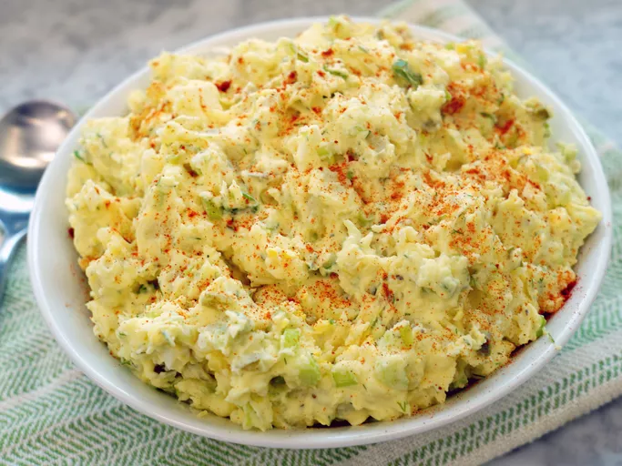

Potato salad

This potato salad is a classic potato salad recipe that is easy to make and serves 8. It's great for picnics, barbecues, or as a side dish for any meal. It's got a great balance of flavors and textures from the potatoes, mayonnaise, mustard, and diced vegetables. It's also a very versatile recipe, so you can easily customize it to suit your tastes. For example, you could add some diced ham or bacon to give it a smoky flavor, or some chopped hard-boiled eggs for extra protein. You could also try using different types of potatoes, such as Yukon Golds or red potatoes, to give it a slightly different flavor and texture. Whatever you choose, I hope you enjoy it!
Ingredients
- % pounds russet potatoes, peeled
- 4 large eggs
- 4 teaspoons kosher salt, or to taste, divided
- 1 cup mayonnaise
- 5 stalks green onions, sliced(white and green parts)
- 2 stalks celery, minced
- 1/2 cup chopped spicy sweet dill pickles (such as wickles)
- 1/3 cup sour cream
- 3 tablespoons yellow mustard
- 1 tablespoon chopped fresh dill
- 3/4 teaspoons pickle juice
- 1/4 teaspoon ground black pepper
- 1/4 teaspoon ground paprika
- 1/4 cup sliced green olives with pimientos
Steps
- Cut potatoes into 1 1/2-inch cubes. Place in a large pot and cover with water by 2 inches. Add eggs and 3 teaspoons salt; bring to a boil over medium-high heat. Reduce heat; simmer 9 minutes.
- Remove eggs with a slotted spoon and immediately immerse in ice water for several minutes to stop the cooking. Continue cooking potatoes until fork-tender, about 1 minute more; drain.
- Peel and chop eggs; set aside
- Add mayonnaise, onions, celery, pickles, sour cream, mustard, pickle juice, dill, and pepper to a large bowl; stir to combine. Stir in potatoes and eggs until well blended, mashing potatoes very slightly. Season with salt and pepper, adding up to 1 teaspoon more salt, if desired.
- Transfer to a serving bowl, sprinkle with paprika, and garnish with olives. Cover and refrigerate at least 2 hours or overnight.